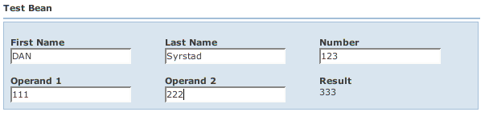

Back: Requirements Next: Actions
Let's take a look at a simple bean from the examples: wicket.contrib.webbeans.examples.simple.TestBean
This is a Java Bean compliant POJO. As most people know, getters start with "get" or "is" and setters start with "set". Java Beans also require a public no-argument constructor, which we have. All beans must be Serializable by Wicket convention.
This bean also implements PropertyChangeListeners and Events. This is an optional part of the Java Beans spec. However, if your bean implements add/removePropertyChangeListener(), BeanForm will automatically register itself as a listener to your bean. In this example, we're going to use PropertyChangeEvents to notify BeanForm when dependent properties change.
If you don't implement PropertyChangeListeners, BeanForm already knows if a single property changes from a change on the form. For example, setFirstName() automatically changes the input value to upper case. BeanForm knows to refresh this field on the form because the user changed it. If you type "xyzzy" in the First Name field and tab or click away from the field, the field is sent to the bean and the field is dynamically refreshed to it's new value "XYZZY".
Before we get too deep, let's take a look at the Wicket page (wicket.contrib.webbeans.examples.simple.SimpleBeanPage) and HTML:
<html xmlns:wicket> <head> <wicket:head> <wicket:link><link href="bean.css" type="text/css" rel="stylesheet" ></link></wicket:link> <title>Simple Bean Page</title> </wicket:head> </head> <body > <span wicket:id="beanForm"></span> </body> </html>
Embed:wicket.contrib.webbeans.examples.simple.SimpleBeanPage
You can see this is pretty simple. There is only a single component added to the page - "beanForm" - which is an instance of wicket.contrib.webbeans.containers.BeanForm. You can see in the constructor that we create an instance of TestBean which is passed to BeanForm. We also create an instance of wicket.contrib.webbeans.model.BeanMetaData. BeanMetaData reflects on the TestBean class to derive the fields and actions for the form.
Note that you can also pass a Wicket IModel that contains your bean, rather than the bean itself, to BeanForm. If the bean is a List, or the IModel contains a List, the results will be displayed as a data table.
If you bring up this page in a browser (see RunningSamples), you will see something like:

Note that "Result" is not editable because there is no setter method on the bean. Also, if you type numbers into Operand 1 and Operand 2, you'll see that the Result field automatically is calculated and updated. The calculation is done by TestBean and the PropertyChangeEvents are notifying WWB to update the result field.
As we mentioned, BeanMetaData represents the metadata for a bean properties and actions. By default, the metadata originates by convention:
Field types are deduced from the property's Java type. The mappings from the property's Java class to the wicket.contrib.webbeans.fields.Field type is done by wicket.contrib.webbeans.model.ComponentRegistry. ComponentRegistry has mappings for most common types and more types can be added if necessary. Also, Field types may be overridden for a specific property in the "beanprops" file, which we'll discuss later.
Back: Requirements Next: Actions